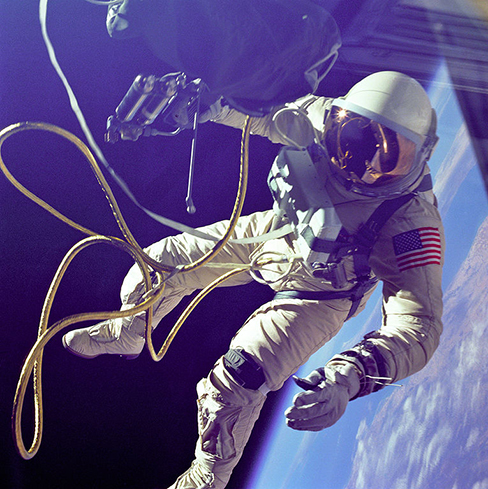
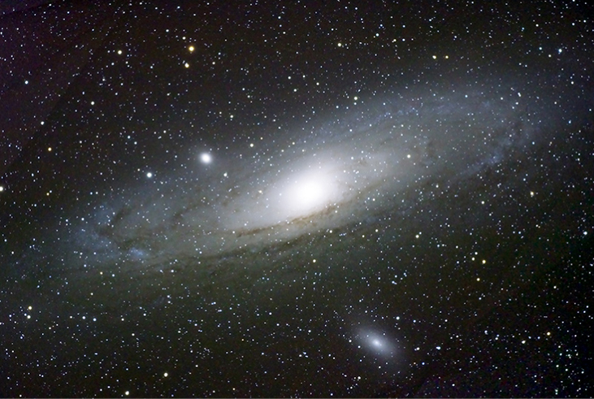
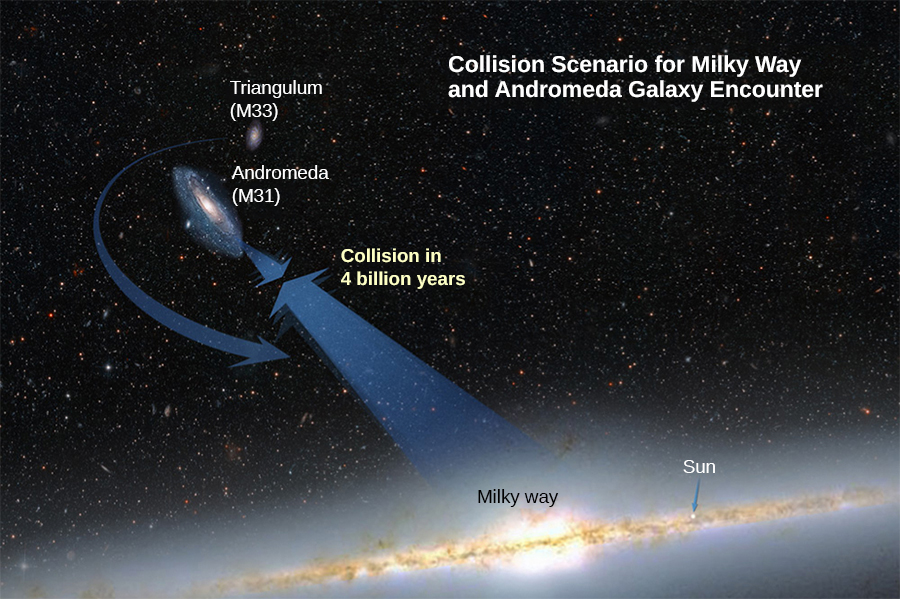

List the significant milestones in the history of gravitation
Calculate the gravitational force between two point masses
Estimate the gravitational force between collections of mass
We first review the history of the study of gravitation, with emphasis on those phenomena that for thousands of years have inspired philosophers and scientists to search for an explanation. Then we examine the simplest form of Newton’s law of universal gravitation and how to apply it.
The History of Gravitation
The earliest philosophers wondered why objects naturally tend to fall toward the ground. Aristotle (384–322 BCE) believed that it was the nature of rocks to seek Earth and the nature of fire to seek the Heavens. Brahmagupta (598~665 CE) postulated that Earth was a sphere and that objects possessed a natural affinity for it, falling toward the center from wherever they were located.
The motions of the Sun, our Moon, and the planets have been studied for thousands of years as well. These motions were described with amazing accuracy by Ptolemy (90–168 CE), whose method of epicycles described the paths of the planets as circles within circles. However, there is little evidence that anyone connected the motion of astronomical bodies with the motion of objects falling to Earth—until the seventeenth century.
Nicolaus Copernicus (1473–1543) is generally credited as being the first to challenge Ptolemy’s geocentric (Earth-centered) system and suggest a heliocentric system, in which the Sun is at the center of the solar system. This idea was supported by the incredibly precise naked-eye measurements of planetary motions by Tycho Brahe and their analysis by Johannes Kepler and Galileo Galilei. Kepler showed that the motion of each planet is an ellipse (the first of his three laws, discussed in Kepler’s Laws of Planetary Motion), and Robert Hooke (the same Hooke who formulated Hooke’s law for springs) intuitively suggested that these motions are due to the planets being attracted to the Sun. However, it was Isaac Newton who connected the acceleration of objects near Earth’s surface with the centripetal acceleration of the Moon in its orbit about Earth.
Finally, in Einstein’s Theory of Gravity, we look at the theory of general relativity proposed by Albert Einstein in 1916. His theory comes from a vastly different perspective, in which gravity is a manifestation of mass warping space and time. The consequences of his theory gave rise to many remarkable predictions, essentially all of which have been confirmed over the many decades following the publication of the theory (including the 2015 measurement of gravitational waves from the merger of two black holes).
Newton’s Law of Universal Gravitation
Newton noted that objects at Earth’s surface (hence at a distance of from the center of Earth) have an acceleration of g, but the Moon, at a distance of about , has a centripetal acceleration about times smaller than g. He could explain this by postulating that a force exists between any two objects, whose magnitude is given by the product of the two masses divided by the square of the distance between them. We now know that this inverse square law is ubiquitous in nature, a function of geometry for point sources. The strength of any source at a distance r is spread over the surface of a sphere centered about the mass. The surface area of that sphere is proportional to . In later chapters, we see this same form in the electromagnetic force.
Newton’s Law of Gravitation
Newton’s law of gravitation can be expressed as
where is the force on object 1 exerted by object 2 and is a unit vector that points from object 1 toward object 2.
As shown in [link], the vector points from object 1 toward object 2, and hence represents an attractive force between the objects. The equal but opposite force is the force on object 2 exerted by object 1.
Gravitational force acts along a line joining the centers of mass of two objects.
These equal but opposite forces reflect Newton’s third law, which we discussed earlier. Note that strictly speaking, [link] applies to point masses—all the mass is located at one point. But it applies equally to any spherically symmetric objects, where r is the distance between the centers of mass of those objects. In many cases, it works reasonably well for nonsymmetrical objects, if their separation is large compared to their size, and we take r to be the distance between the center of mass of each body.
The Cavendish Experiment
A century after Newton published his law of universal gravitation, Henry Cavendish determined the proportionality constant G by performing a painstaking experiment. He constructed a device similar to that shown in [link], in which small masses are suspended from a wire. Once in equilibrium, two fixed, larger masses are placed symmetrically near the smaller ones. The gravitational attraction creates a torsion (twisting) in the supporting wire that can be measured.
The constant G is called the universal gravitational constant and Cavendish determined it to be . The word ‘universal’ indicates that scientists think that this constant applies to masses of any composition and that it is the same throughout the Universe. The value of G is an incredibly small number, showing that the force of gravity is very weak. The attraction between masses as small as our bodies, or even objects the size of skyscrapers, is incredibly small. For example, two 1.0-kg masses located 1.0 meter apart exert a force of on each other. This is the weight of a typical grain of pollen.
Cavendish used an apparatus similar to this to measure the gravitational attraction between two spheres (m) suspended from a wire and two stationary spheres (M). This is a common experiment performed in undergraduate laboratories, but it is quite challenging. Passing trucks outside the laboratory can create vibrations that overwhelm the gravitational forces.
Although gravity is the weakest of the four fundamental forces of nature, its attractive nature is what holds us to Earth, causes the planets to orbit the Sun and the Sun to orbit our galaxy, and binds galaxies into clusters, ranging from a few to millions. Gravity is the force that forms the Universe.
Newton’s Law of Gravitation
To determine the motion caused by the gravitational force, follow these steps:
Identify the two masses, one or both, for which you wish to find the gravitational force.
Draw a free-body diagram, sketching the force acting on each mass and indicating the distance between their centers of mass.
Apply Newton’s second law of motion to each mass to determine how it will move.
A Collision in Orbit
Consider two nearly spherical Soyuz payload vehicles, in orbit about Earth, each with mass 9000 kg and diameter 4.0 m. They are initially at rest relative to each other, 10.0 m from center to center. (As we will see in Kepler’s Laws of Planetary Motion, both orbit Earth at the same speed and interact nearly the same as if they were isolated in deep space.) Determine the gravitational force between them and their initial acceleration. Estimate how long it takes for them to drift together, and how fast they are moving upon impact.
Strategy
We use Newton’s law of gravitation to determine the force between them and then use Newton’s second law to find the acceleration of each. For the estimate, we assume this acceleration is constant, and we use the constant-acceleration equations from Motion along a Straight Line to find the time and speed of the collision.
Solution
The magnitude of the force is
The initial acceleration of each payload is
The vehicles are 4.0 m in diameter, so the vehicles move from 10.0 m to 4.0 m apart, or a distance of 3.0 m each. A similar calculation to that above, for when the vehicles are 4.0 m apart, yields an acceleration of , and the average of these two values is . If we assume a constant acceleration of this value and they start from rest, then the vehicles collide with speed given by
so
We use to find or about 4.6 hours.
Significance
These calculations—including the initial force—are only estimates, as the vehicles are probably not spherically symmetrical. But you can see that the force is incredibly small. Astronauts must tether themselves when doing work outside even the massive International Space Station (ISS), as in [link], because the gravitational attraction cannot save them from even the smallest push away from the station.
This photo shows Ed White tethered to the Space Shuttle during a spacewalk. (credit: NASA)

Check Your Understanding What happens to force and acceleration as the vehicles fall together? What will our estimate of the velocity at a collision higher or lower than the speed actually be? And finally, what would happen if the masses were not identical? Would the force on each be the same or different? How about their accelerations?
The force of gravity on each object increases with the square of the inverse distance as they fall together, and hence so does the acceleration. For example, if the distance is halved, the force and acceleration are quadrupled. Our average is accurate only for a linearly increasing acceleration, whereas the acceleration actually increases at a greater rate. So our calculated speed is too small. From Newton’s third law (action-reaction forces), the force of gravity between any two objects must be the same. But the accelerations will not be if they have different masses.
The effect of gravity between two objects with masses on the order of these space vehicles is indeed small. Yet, the effect of gravity on you from Earth is significant enough that a fall into Earth of only a few feet can be dangerous. We examine the force of gravity near Earth’s surface in the next section.
Attraction between Galaxies
Find the acceleration of our galaxy, the Milky Way, due to the nearest comparably sized galaxy, the Andromeda galaxy ([link]). The approximate mass of each galaxy is 800 billion solar masses (a solar mass is the mass of our Sun), and they are separated by 2.5 million light-years. (Note that the mass of Andromeda is not so well known but is believed to be slightly larger than our galaxy.) Each galaxy has a diameter of roughly 100,000 light-years .
Galaxies interact gravitationally over immense distances. The Andromeda galaxy is the nearest spiral galaxy to the Milky Way, and they will eventually collide. (credit: Boris Štromar)

Strategy
As in the preceding example, we use Newton’s law of gravitation to determine the force between them and then use Newton’s second law to find the acceleration of the Milky Way. We can consider the galaxies to be point masses, since their sizes are about 25 times smaller than their separation. The mass of the Sun (see Appendix D) is and a light-year is the distance light travels in one year, .
Solution
The magnitude of the force is
The acceleration of the Milky Way is
Significance
Does this value of acceleration seem astoundingly small? If they start from rest, then they would accelerate directly toward each other, “colliding” at their center of mass. Let’s estimate the time for this to happen. The initial acceleration is , so using , we see that it would take for each galaxy to reach a speed of 1.0 m/s, and they would be only closer. That is nine orders of magnitude smaller than the initial distance between them. In reality, such motions are rarely simple. These two galaxies, along with about 50 other smaller galaxies, are all gravitationally bound into our local cluster. Our local cluster is gravitationally bound to other clusters in what is called a supercluster. All of this is part of the great cosmic dance that results from gravitation, as shown in [link].
Based on the results of this example, plus what astronomers have observed elsewhere in the Universe, our galaxy will collide with the Andromeda Galaxy in about 4 billion years. (credit: modification of work by NASA; ESA; A. Feild and R. van der Marel, STScI)

Summary
All masses attract one another with a gravitational force proportional to their masses and inversely proportional to the square of the distance between them.
Spherically symmetrical masses can be treated as if all their mass were located at the center.
Nonsymmetrical objects can be treated as if their mass were concentrated at their center of mass, provided their distance from other masses is large compared to their size.
Conceptual Questions
Action at a distance, such as is the case for gravity, was once thought to be illogical and therefore untrue. What is the ultimate determinant of the truth in science, and why was this action at a distance ultimately accepted?
The ultimate truth is experimental verification. Field theory was developed to help explain how force is exerted without objects being in contact for both gravity and electromagnetic forces that act at the speed of light. It has only been since the twentieth century that we have been able to measure that the force is not conveyed immediately.
In the law of universal gravitation, Newton assumed that the force was proportional to the product of the two masses (). While all scientific conjectures must be experimentally verified, can you provide arguments as to why this must be? (You may wish to consider simple examples in which any other form would lead to contradictory results.)
Problems
Evaluate the magnitude of gravitational force between two 5-kg spherical steel balls separated by a center-to-center distance of 15 cm.
Estimate the gravitational force between two sumo wrestlers, with masses 220 kg and 240 kg, when they are embraced and their centers are 1.2 m apart.
Astrology makes much of the position of the planets at the moment of one’s birth. The only known force a planet exerts on Earth is gravitational. (a) Calculate the gravitational force exerted on a 4.20-kg baby by a 100-kg father 0.200 m away at birth (he is assisting, so he is close to the child). (b) Calculate the force on the baby due to Jupiter if it is at its closest distance to Earth, some away. How does the force of Jupiter on the baby compare to the force of the father on the baby? Other objects in the room and the hospital building also exert similar gravitational forces. (Of course, there could be an unknown force acting, but scientists first need to be convinced that there is even an effect, much less that an unknown force causes it.)
a. ; b. The mass of Jupiter is
A mountain 10.0 km from a person exerts a gravitational force on him equal to 2.00% of his weight. (a) Calculate the mass of the mountain. (b) Compare the mountain’s mass with that of Earth. (c) What is unreasonable about these results? (d) Which premises are unreasonable or inconsistent? (Note that accurate gravitational measurements can easily detect the effect of nearby mountains and variations in local geology.)
The International Space Station has a mass of approximately 370,000 kg. (a) What is the force on a 150-kg suited astronaut if she is 20 m from the center of mass of the station? (b) How accurate do you think your answer would be?
a. ; b. Not very, as the ISS is not even symmetrical, much less spherically symmetrical.
Asteroid Toutatis passed near Earth in 2006 at four times the distance to our Moon. This was the closest approach we will have until 2060. If it has mass of , what force did it exert on Earth at its closest approach?
(a) What was the acceleration of Earth caused by asteroid Toutatis (see previous problem) at its closest approach? (b) What was the acceleration of Toutatis at this point?
a. ; b.
Glossary
Newton’s law of gravitation
every mass attracts every other mass with a force proportional to the product of their masses, inversely proportional to the square of the distance between them, and with direction along the line connecting the center of mass of each
universal gravitational constant
constant representing the strength of the gravitational force, that is believed to be the same throughout the universe
![The figure shows two circular objects, one smaller, labeled as mass m1 on the lower left, and the larger one labeled m2 on the upper right. The center of each object is labeled C M. A line is drawn joining the center of the objects and is labeled as r. Two red arrows and two black arrows, one each from the center of each object, are drawn toward each other. The black arrow from the center of mass 1 is labeled r hat 1 2 and the red arrow from mass 1 is labeled F 1 2. The black arrow from the center of mass 2 is labeled r hat 2 1 and the red arrow from mass 2 is labeled F 2 1.](CNX_UPhysics_13_01_NewtonLofG.jpg)
![The figure illustrates the Cavendish experiment. A horizontal bar, centered on a stand, supports two spheres of mass M, one at either of its ends. The point where the bar sits on the stand is labeled "pivot". Just over this bar is a stick holding two spherical objects of mass m, one mass at either of its ends. This bar is suspended from a mirror at the center of the device facing to the right. The mirror is suspended from a fiber. The rotation of the fiber over the axis of the stand is counter-clockwise. A light source on the right side of the device emits a ray of light toward the mirror which is then reflected toward a scale bar which is on the right to the device below the light source.](CNX_UPhysics_13_01_Cavendish.jpg)